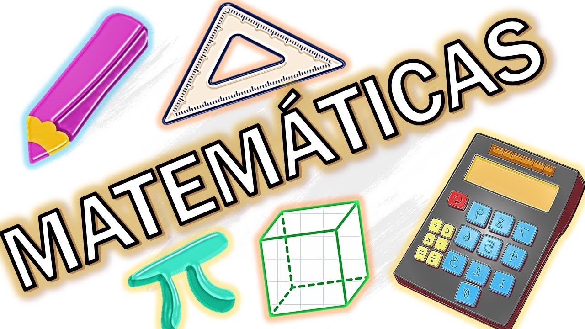

Conceptos básicos de álgebra
Explora cómo resolver ecuaciones y trabajar con expresiones algebraicas. Aprende a simplificar, factorizar y resolver ecuaciones lineales, cuadráticas y más.
Temas cubiertos:
- Operaciones básicas con polinomios.
- Resolución de ecuaciones de primer y segundo grado.
- Desarrollo de habilidades para trabajar con fracciones algebraicas.